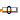
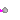

| Name | Description |
|---|---|
| RealValue | Show Real value from numberPort or from number input field in diagram layer dynamically |
|  IntegerValue | Show Integer value from numberPort or from number input field in diagram layer dynamically |
|  BooleanValue | Show Boolean value from numberPort or from number input field in diagram layer dynamically |
This block visualizes a Real number in a diagram animation. The number to be visualized can be defined in the following ways:
The two versions of the block are shown in the following image (in the right variant, the name of the variable value that is displayed is also shown below the icon):
The usage is demonstrated, e.g., in example Modelica.Blocks.Examples.RealNetwork1.
| Name | Description |
|---|---|
| use_numberPort | = true, if numberPort enabled |
| number | Number to visualize if use_numberPort=false (time varying) |
| significantDigits | Number of significant digits to be shown |
| Name | Description |
|---|---|
| numberPort | Number to be shown in diagram layer if use_numberPort = true |
| showNumber |
 Modelica.Blocks.Interaction.Show.IntegerValue
Modelica.Blocks.Interaction.Show.IntegerValueThis block visualizes an Integer number in a diagram animation. The number to be visualized can be defined in the following ways:
The two versions of the block are shown in the following image (in the right variant, the name of the variable value that is displayed is also shown below the icon):

The usage is demonstrated, e.g., in example Modelica.Blocks.Examples.IntegerNetwork1.
| Name | Description |
|---|---|
| use_numberPort | = true, if numberPort enabled |
| number | Number to visualize if use_numberPort=false (time varying) |
| Name | Description |
|---|---|
| numberPort | Number to be shown in diagram layer if use_numberPort = true |
| showNumber |
This block visualizes a Boolean variable in a diagram animation. The Boolean variable to be visualized can be defined in the following ways:
If the Boolean variable is false the block is "grey", otherwise, it is "green". The two versions of the block are shown in the following image (in the right variant, the name of the variable value that is displayed is also shown below the icon):

The usage is demonstrated, e.g., in example Modelica.Blocks.Examples.BooleanNetwork1.
| Name | Description |
|---|---|
| use_activePort | = true, if activePort enabled |
| active | Boolean variable to visualize if use_activePort=false (time varying) |
| Name | Description |
|---|---|
| activePort | Boolean variable to be shown in diagram layer if use_activePort = true |
| showActive |